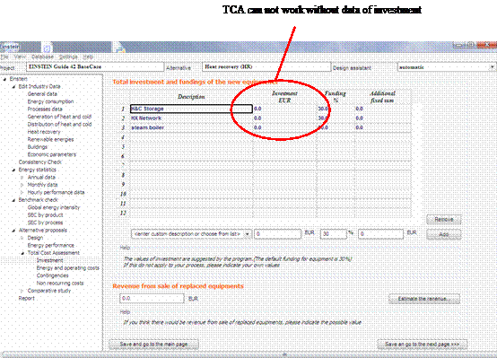
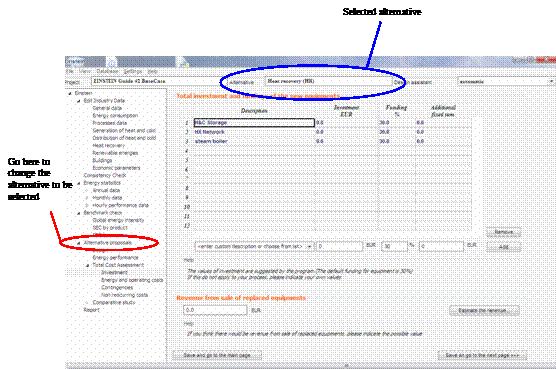

User Manual
Chapter 11: TCA - Tips & Tricks
1. Some elemental economic data
should be filled in the questionnaire before coming to the TCA module
(fuel and electricity price in Q2, general economic data and operation and
maintenance costs in Q9).
2. At the begining, data of
Investment and Operating and maintenance costs may not be displayed and
calculated in TCA, causing the unappropriate values of TCA result. You
need to click on “Reset TCA for all proposals” to reload the data and redo
the calculation. Be noticed that this RESET should be carried out at the
first entry before making any change in TCA otherwise you will reset all the
new data.

Figure 11 - Tips&Tricks.3 Reset of TCA parameters
3. TCA can not work correctly if
there is no data of turnkey price (investment) for the alternatives in the
database. With some equipments, no default turnkey price available in the
database, you need to provide your
own value in the Investment page.

Figure 11 - Tips&Tricks.1 Definition of investment costs
4. Changes of investment, energy
and operating costs, contingencies, non-reoccuring costs can only effect
the selected alternative (shown on the top of the tool’s interface). Thus
if you want to have the changes applied also for other alternatives, first
you need go to the page of “Alternative proposals” to alter the selected
alternative, then go to TCA and modify the corresponding data.

Figure 11 - Tips&Tricks.2 Modification of economic parameters for the selected alternative
5. What is not working in TCA:
At the moment, the results of TCA
are not fully writen into the Report. In the page 4.7 of the Report, the data
of Modified Internal Rate of Return and Benefit and Cost Ratio are still
missing. You can find these data in the tool from the last panel of the
Comparative Study.

Figure 11 - Tips&Tricks.4 Workaround. Visualization of MIRR.
The pages 4.7.1 (The unviable
altenatives) and 4.7.2 (Rating the proposed alternatives) in the Report have
not yet worked due to some technical problems.